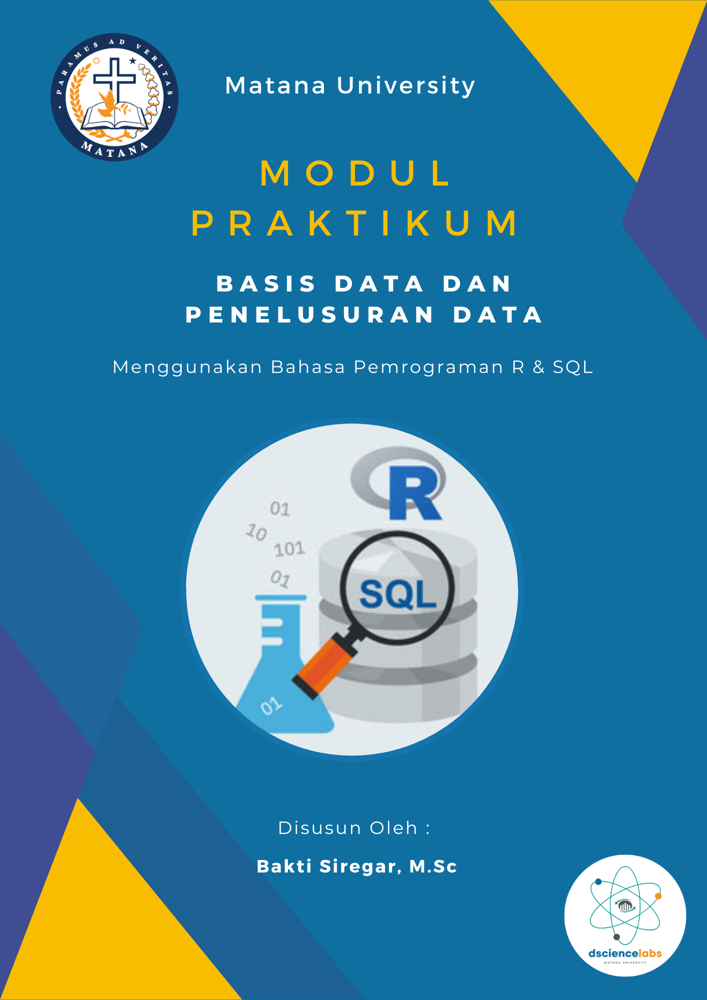

Basis Data dan Penelusuran Data
2023-09-04
Kata Pengantar
Selamat datang dalam modul praktikum mengenai basis data dan penelusuran data. Dalam era digital yang semakin maju, pengelolaan informasi dan akses terhadap data sangatlah penting. Basis data merupakan fondasi utama dalam pengelolaan data yang efisien dan terstruktur, sedangkan penelusuran data memungkinkan kita untuk menggali wawasan berharga dari kumpulan informasi yang tersedia. Dalam modul ini, kita akan menjelajahi konsep-konsep dasar dalam basis data, termasuk jenis-jenis basis data, model data, bahasa kueri, dan praktik terbaik dalam merancang basis data yang optimal. Secara khusus, mudul ini

Selain itu, penelusuran basis data yang menjadi fokus penting adalah menggunakan R Programing dan SQL dalam membuat data analytics system. Penelusuran data melibatkan teknik-teknik dan alat-alat untuk menggali informasi yang berharga dari kumpulan data yang besar dan kompleks. Dengan adanya kemajuan dalam analisis data dan kecerdasan buatan, penelusuran data telah menjadi aspek penting dalam pengambilan keputusan dan inovasi. Penulis berharap bimbingan ini akan memberikan pemahaman yang kokoh tentang basis data dan penelusuran data, serta memberi Anda wawasan yang berguna dalam mengelola data dan mengambil informasi berharga dari sumber daya yang ada. Selamat belajar!
Ringkasan Materi
Adapun isi pembelajaran dalam modul ini adalah sebagai berikut:
- Bab 1
- Bab 2
- Bab 3
- Dst
Penulis

- Bakti Siregar, M.Sc adalah Ketua Program Studi di Jurusan Statistika Universitas Matana. Lulusan Magister Matematika Terapan dari National Sun Yat Sen University, Taiwan. Beliau juga merupakan dosen dan konsultan Data Scientist di perusahaan-perusahaan ternama seperti JNE, Samora Group, Pertamina, dan lainnya. Beliau memiliki antusiasme khusus dalam mengajar Big Data Analytics, Machine Learning, Optimisasi, dan Analisis Time Series di bidang keuangan dan investasi. Keahliannya juga terlihat dalam penggunaan bahasa pemrograman Statistik seperti R Studio dan Python. Beliau mengaplikasikan sistem basis data MySQL/NoSQL dalam pembelajaran manajemen data, serta mahir dalam menggunakan tools Big Data seperti Spark dan Hadoop. Beberapa project beliau dapat dilihat di link berikut: Rpubs, Github, Website, dan Kaggle.
Asisten Lab

- Yonathan Anggraiwan, S.Stat adalah seorang alumni Statistika yang bersemangat dalam dunia pemrograman dan analisis data. Lahir di Tangerang, minatnya terhadap teknologi dan komputer muncul sejak usia dini. Ia tumbuh dengan rasa ingin tahu yang kuat terhadap bahasa pemrograman, dan ini membawanya menuju dunia analisis data menggunakan bahasa pemrograman R dan Python. Selama menjalankan tugas sebagai asisten lab, Yonathan Anggraiwan berperan dalam membantu mahasiswa dalam memahami konsep-konsep dasar dan kompleks dalam pemrograman R dan Python. Ia memberikan penjelasan yang jelas dan dukungan kepada mahasiswa yang mengalami kesulitan. Selain itu, ia juga terlibat dalam merancang tugas dan ujian praktikum, serta memberikan umpan balik konstruktif kepada para mahasiswa. Dalam perjalanan waktu, Yonathan Anggraiwan mulai mengambil tanggung jawab lebih besar dalam laboratorium. Ia membantu mengembangkan materi pembelajaran tambahan, seperti tutorial online tentang analisis data menggunakan R dan Python. Ia juga aktif dalam berbagai proyek penelitian di bawah bimbingan dosen, yang melibatkan pengolahan data besar untuk analisis statistik dan visualisasi. Dengan semangat yang tinggi, dedikasi, dan keterampilan yang dimilikinya, Yonathan Anggraiwan adalah contoh nyata dari seorang mahasiswa yang berhasil menggabungkan minatnya dalam pemrograman R dan Python dengan peran yang produktif sebagai asisten laboratorium dan kontributor dalam dunia analisis data.
Ucapan Terima Kasih
Saya ingin mengucapkan terima kasih yang tulus kepada semua yang telah mendukung dan berkontribusi dalam perjalanan pembuatan modul “Basis Data dan Penelusuran Data”. Modul ini tidak akan mungkin menjadi kenyataan tanpa kerja keras, semangat, dan dukungan yang luar biasa dari berbagai pihak. Terima kasih juga kepada rekan-rekan dan kolega yang telah memberikan masukan, saran, dan diskusi berharga sepanjang perjalanan penulisan modul ini. Kontribusi kalian telah membantu memperkaya isi modul dan menghadirkan sudut pandang yang beragam. Tentu saja,modul ini tidak akan lengkap tanpa rasa terima kasih kepada para peneliti dan praktisi di bidang basis data dan penelusuran data yang telah menciptakan landasan pengetahuan yang menjadi dasar dari modul ini. Pengalaman dan pengetahuan yang kalian bagikan sangat berharga. Saya juga ingin mengucapkan terima kasih kepada keluarga dan teman-teman saya atas dukungan, pengertian, dan dorongan yang tak henti-hentinya. Tanpa dukungan kalian, perjalanan menulis modul ini pastinya tidak akan semudah ini.
Akhir kata, semoga modul ini dapat memberikan manfaat dan wawasan baru kepada para pembaca yang ingin mendalami dunia basis data dan penelusuran data. Ucapan terima kasih terakhir saya tujukan untuk semua yang telah berkontribusi, baik secara langsung maupun tidak langsung, dalam menghadirkan modul ini kepada para pembaca.
Masukan & Saran
Semua masukan dan tanggapan Anda sangat berarti bagi kami untuk memperbaiki template ini kedepannya. Bagi para pembaca/pengguna yang ingin menyampaikan masukan dan tanggapan, dipersilahkan melalui kontak dibawak ini!
Email: dsciencelabs@outlook.com